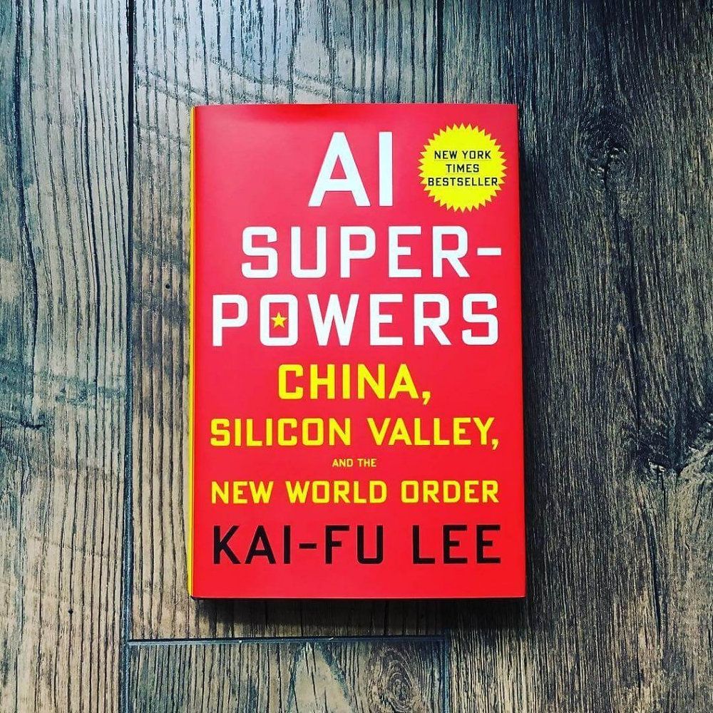

Nguyễn Phạm Tường Vi [REDACTED] (1)

CẢM NHẬN VỀ CUỐN SÁCH
Tên sách: AI Superpowers: China, Silicon Valley, and the New World Order
Tác giả: Tiến sĩ Kai-Fu Lee (Lý Khai Phục)
Năm xuất bản: 2018 (Phiên bản tiếng Việt do NXB Trẻ phát hành)
Thể loại: Công nghệ, Kinh tế địa chính trị, Phát triển xã hội
Chủ đề chính: Cuộc đua công nghệ AI giữa Mỹ và Trung Quốc, tác động của làn sóng tự động hóa đối với thị trường lao động toàn cầu, cùng giải pháp mang tính nhân văn cho tương lai nhân loại.
Về tác giả: Tiến sĩ Kai-Fu Lee là một trong những nhà tư tưởng và chuyên gia hàng đầu thế giới về Trí tuệ Nhân tạo. Ông từng giữ các vị trí quản lý cấp cao tại Apple, Microsoft, Google và hiện là nhà đầu tư mạo hiểm công nghệ. Với vị thế của người trực tiếp chứng kiến và tham gia vào sự phát triển của AI ở cả Mỹ và Trung Quốc, ông mang đến một góc nhìn vừa thực tế, vừa sâu sắc.
- Cảm nhận cá nhân sâu sắc hơn sau khi đọc sách
Sự thức tỉnh từ tâm lý hoài nghi sang chủ động đối mặt
Thú thật, trước khi cầm trên tay cuốn sách này, cảm giác chủ đạo của tôi đối với AI là sự mơ hồ và áp lực. Hằng ngày, những thông tin về việc AI sáng tạo tranh, viết mã, hay làn sóng sa thải nhân sự ở các công ty lớn khiến tôi có tâm lý vừa tò mò lại vừa e sợ.
Tuy nhiên, cách Lý Khai Phục dẫn dắt vấn đề đã giúp tôi "giải mã" được nỗi sợ đó. Tác giả không dùng thuật ngữ kỹ thuật phức tạp hay vẽ ra bức tranh viễn tưởng huyễn hoặc. Bằng sự điềm tĩnh của một nhà khoa học và tầm nhìn của một nhà đầu tư, ông bóc tách AI thành một công cụ công nghệ tự nhiên của thời đại. Điều làm tôi gật gù nhất là góc nhìn: AI không đến để hủy diệt hay giải cứu thế giới, mà AI đến như một tấm gương phản chiếu chính năng lực, tham vọng và giới hạn của con người.
Điểm chạm đến cảm xúc: giác ngộ từ ranh giới sinh tử
Phần khiến tôi thực sự nghẹn ngào và nhớ mãi là những trang sách cuối, nơi tác giả kể về khoảng thời gian ông đối diện với căn bệnh ung thư.
Trước biến cố, ông là một "kẻ cuồng công việc" điển hình của Thung lũng Silicon — sống như một cỗ máy được lập trình tối ưu hóa từng giây phút. Nhưng khi đứng trước ranh giới sống chết, ông mới bừng tỉnh nhận ra: Không một thuật toán nào có thể đo đếm được tình yêu thương của gia đình, không một AI siêu việt nào có thể thay thế sự vỗ về giữa người với người.
Đoạn văn này hoàn toàn làm thay đổi nhịp điệu của một cuốn sách vốn đậm chất công nghệ - kinh tế. Nó như một gáo nước lạnh thức tỉnh tôi: Nếu chúng ta cố biến mình thành những "cỗ máy làm việc hiệu suất cao", chúng ta chắc chắn sẽ thua AI. Nhưng nếu chúng ta sống đúng nghĩa là một con người giàu tình cảm và sự thấu cảm, AI sẽ vĩnh viễn không thể thay thế.
2. Liên hệ bản thân và Định hướng hành động cụ thể
Từ những chiêm nghiệm trên, tôi đã tự rút ra cho mình những bài học và sự thay đổi rõ rệt trong tư duy lẫn thói quen hàng ngày:
Thay đổi tư duy về "Năng lực cạnh tranh"
Nhìn nhận lại kỹ năng cá nhân: Tôi bắt đầu rà soát lại những gì mình đang học và làm. Những tác vụ mang tính lặp đi lặp lại, ghi nhớ dữ liệu thuần túy hay thực hiện theo quy trình cố định... tôi biết mình cần phải nâng cấp hoặc chuyển đổi.
Tập trung vào "Phần Người" (Human Touch): Tôi rèn luyện nhiều hơn về khả năng giao tiếp, sự lắng nghe, tư duy phản biện và năng lực giải quyết xung đột — những thứ cần đến trí tuệ cảm xúc (EQ) mà máy móc không có.
Chuyển từ tâm thế "Lo sợ bị thay thế" sang "Chủ động làm chủ"
Coi AI là "Trợ lý đắc lực": Thay vì né tránh, tôi tìm cách đưa AI vào công việc và học tập hằng ngày. Tôi dùng AI để tìm kiếm thông tin nhanh hơn, hỗ trợ phác thảo ý tưởng hay tối ưu hóa các công việc văn phòng tốn thời gian.
Giữ vững vai trò người cầm lái: Tôi luôn tự nhắc nhở bản thân không được "ủy thác" tư duy cho AI. Kết quả AI trả ra chỉ là nguyên liệu thô, còn quyết định cuối cùng, sự kiểm chứng tính đúng đắn và dấu ấn sáng tạo riêng vẫn phải xuất phát từ chính bộ não của mình.
Cân bằng lại giá trị cuộc sống
Cuốn sách nhắc nhở tôi không rơi vào cái bẫy "tối ưu hóa" mọi thứ một cách vô cảm. Dù công nghệ có phát triển nhanh đến đâu, tôi vẫn dành thời gian cho những kết nối thực tế: trò chuyện sâu sắc với người thân, lắng nghe bạn bè và tham gia các hoạt động cộng đồng. Đó chính là nguồn năng lượng giúp con người duy trì bản sắc riêng trong một thế giới ngày càng bị số hóa.
- CÁC CHI TIẾT VÀ NỘI DUNG ẤN TƯỢNG NHẤT
Đấu trường "Sói chiến" tại Trung Quốc: Tác giả miêu tả môi trường khởi nghiệp Trung Quốc như một "đấu trường La Mã" tàn khốc, nơi các công ty sẵn sàng sao chép, hạ giá và chiến đấu mất còn để giành thị phần. Chính sự khắc nghiệt này đã tôi luyện nên một thế hệ doanh nhân có tốc độ thực thi và khả năng chịu nhiệt khủng thiếp.
Ẩn dụ "Saudi Arabia của Dữ liệu": Nhờ thói quen sử dụng ví điện tử và các ứng dụng siêu dịch xử lý hàng trăm triệu giao dịch mỗi ngày, Trung Quốc trở thành quốc gia giàu tài nguyên dữ liệu nhất thế giới — nguồn nhiên liệu chính để huấn luyện AI.
Bước ngoặt thức tỉnh từ căn bệnh ung thư: Chi tiết cảm động nhất cuốn sách là câu chuyện tác giả phát hiện mắc ung thư giai đoạn 4. Trước đó, ông sống như một "cỗ máy cuồng công việc" tối ưu hóa từng phút. Nhưng khi đứng trước ranh giới sinh tử, ông nhận ra mọi thành tựu hay thuật toán đều trở nên vô nghĩa nếu thiếu đi tình yêu thương của gia đình. Ông rút ra kết luận: AI có trí tuệ (IQ) siêu việt để tối ưu hiệu suất, nhưng vĩnh viễn không có trái tim (EQ) hay tình yêu thương.
- CẢM NHẬN VÀ LIÊN HỆ BẢN THÂN
Thay đổi tư duy từ "Lo sợ" sang "Chủ động"
Trước khi đọc cuốn sách, tôi luôn có cảm giác bất an và hoang mang trước sự phát triển của công nghệ. Tuy nhiên, cách giải thích điềm tĩnh của Kai-Fu Lee đã giúp tôi nhận ra: AI không đến để tiêu diệt con người, mà đến như một tấm gương phản chiếu chính năng lực và giới hạn của chúng ta. Việc lo sợ bị thay thế là vô ích; thay vào đó, điều cần làm là chủ động học cách làm chủ và sử dụng AI như một người trợ lý đắc lực để gia tăng hiệu suất.
Định hướng phát triển năng lực cá nhân
Đọc xong tác phẩm, tôi tự nhìn nhận lại lộ trình học tập và làm việc của chính mình:
Đọc xong tác phẩm, tôi tự nhìn nhận lại lộ trình học tập và làm việc của chính mình: Loại bỏ tư duy học vẹt, lặp lại: Những kỹ năng chỉ dựa vào ghi nhớ thuần túy hay làm theo quy trình cố định sẽ sớm bị máy móc thay thế.
Tập trung rèn luyện "Phần Người" (Human Touch): Tôi chú trọng hơn vào việc rèn luyện tư duy phản biện, khả năng sáng tạo, kỹ năng giao tiếp và đặc biệt là trí tuệ cảm xúc (EQ) — những giá trị độc bản mà không thuật toán nào có thể sao chép.
Cân bằng lại giá trị cuộc sống: Chi tiết về biến cố sức khỏe của tác giả là một lời cảnh tỉnh sâu sắc. Nó nhắc nhở tôi không được rơi vào cái bẫy "tối ưu hóa" mọi thứ một cách vô cảm. Dù công nghệ có phát triển nhanh đến đâu, việc duy trì các kết nối thực tế — trò chuyện với gia đình, sẻ chia với bạn bè và lan tỏa sự thấu cảm — mới là điều tạo nên ý nghĩa thực sự của cuộc sống.
- Kết Luận
"Thế Lực Siêu Việt AI" không chỉ là một tác phẩm phân tích công nghệ hay kinh tế địa chính trị đơn thuần, mà còn là một cuốn sổ tay định hướng tư duy đầy tính nhân văn. Tác phẩm trao cho người đọc cái nhìn toàn cảnh, tỉnh táo về làn sóng AI, đồng thời gửi gắm thông điệp đắt giá: Trong kỷ nguyên AI, chính tình yêu thương, lòng thấu cảm và những giá trị nhân văn mới là thứ khẳng định vị thế bền vững của con người.